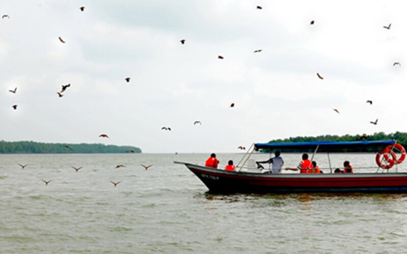
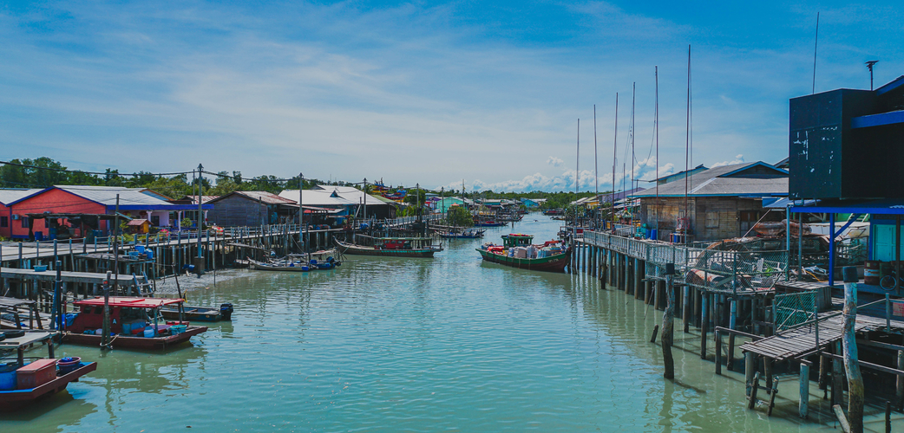
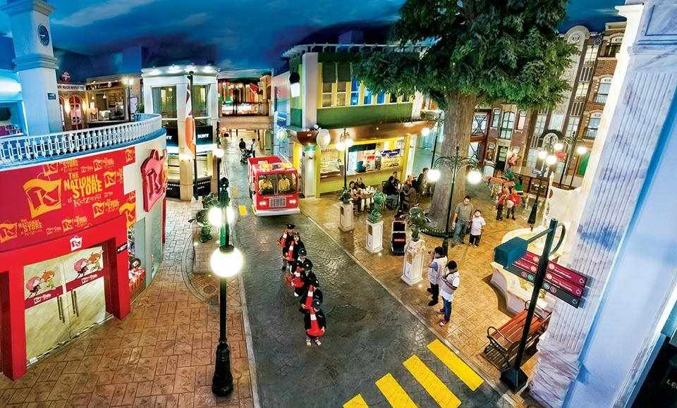
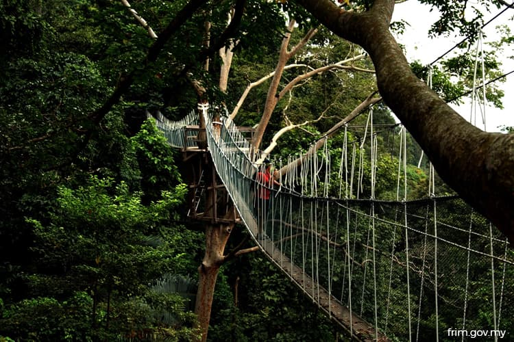
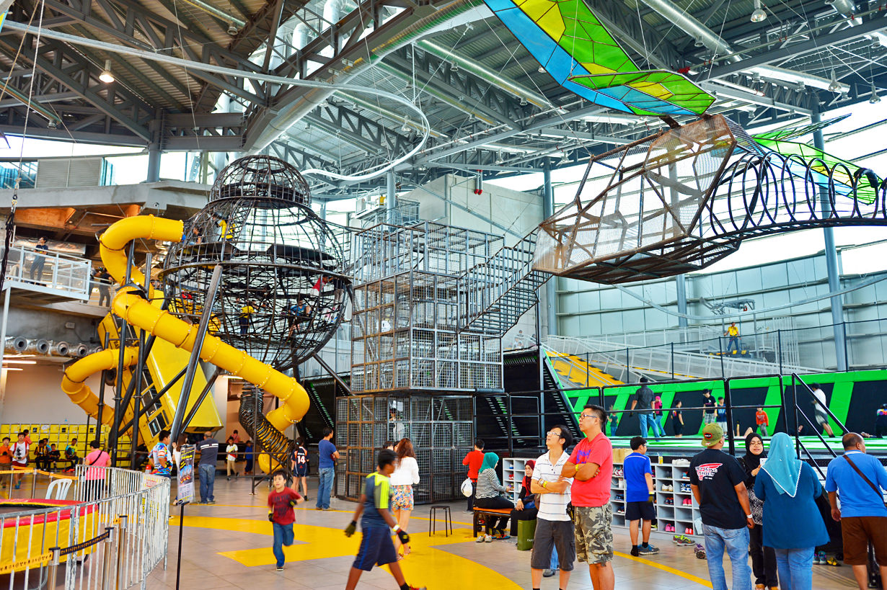

Selangor holds the title as both the wealthiest and most populated state in Malaysia (a whopping four million residents live here). Sprawling through the Klang Valley, Selangor houses a handful of fascinating attractions, such as capital Shah Alam’s gigantic blue-dome Sultan Salahuddin Abdul Aziz Mosque. The Kampong-style town of Kuala Selangor offers river cruises to watch the fireflies dance above the murky river. Foodies can taste Kajang’s famous satay, or try Chinese-Malaysian speciality bak kut teh (pork rib soup) in Klang.

D tours kuala selangor sky mirror& Eagle feeding tour
Eagle Feeding is one of the main attraction in Kuala Selangor. You will be able to experience 20-40 eagles flying in sky and waiting the foods from your tour guides
Address: Pasir Penambang, 45000 Kuala Selangor, Selangor

Pulau Ketam
Pulau Ketam is an island located off the coast of Port Klang, Selangor, Malaysia. The island is in the intertidal zone and the chief vegetation is mangrove.

KidZania Kuala Lumpur
Sprawling children's theme park offering immersive career role-play, from firefighter to surgeon.
Address: Address: Curve NX, 18, Jalan PJU 7/5, Mutiara Damansara, 47810 Petaling Jaya, Selangor

Forest Research Institute Malaysia (FRIM)
PThe Forest Research Institute Malaysia is a statutory agency of the Government of Malaysia, under the Ministry of Land, Water and Natural Resources
Address: Jalan Frim, Institut Penyelidikan Perhutanan Malaysia, 52109 Kuala Lumpur, Selangor

District 21
Located as part of a large shopping complex, this theme park features a range of attractions. Address: Address: AT 6, IOI City Mall, IOI Resort City, 62502 Putrajaya, Wilayah Persekutuan Putrajaya